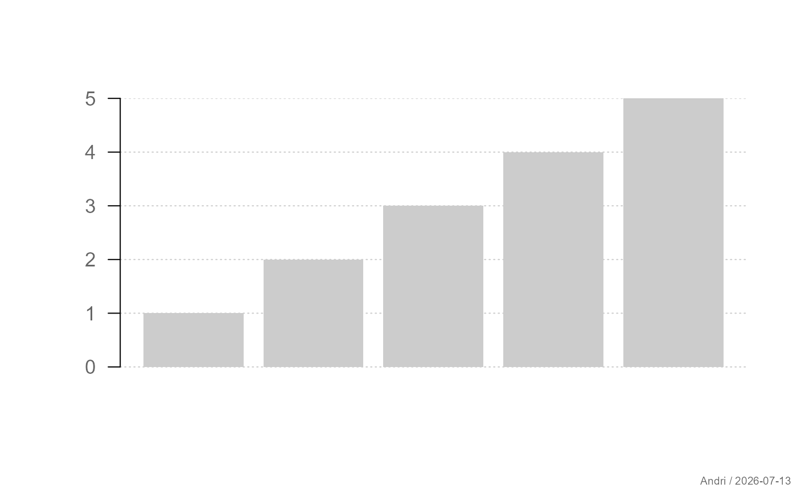
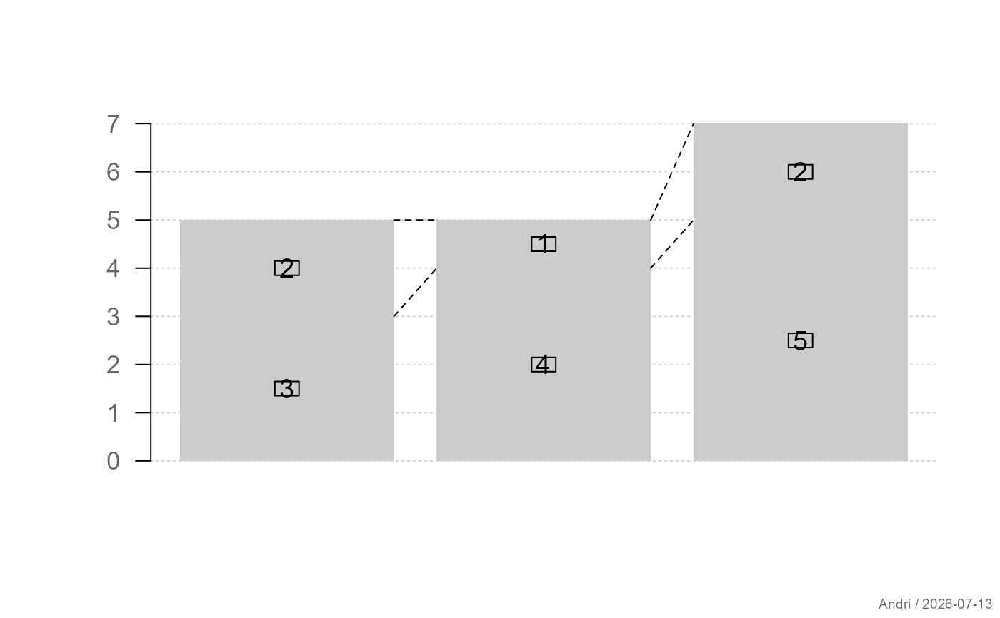
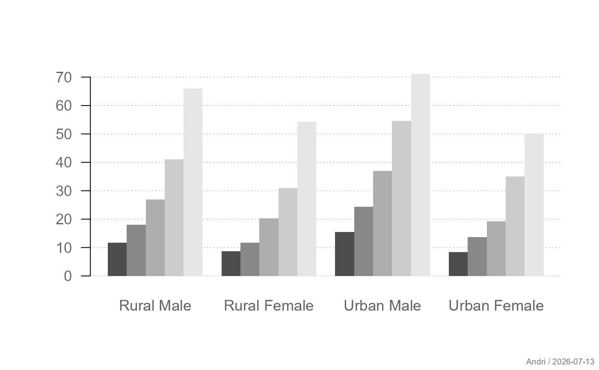
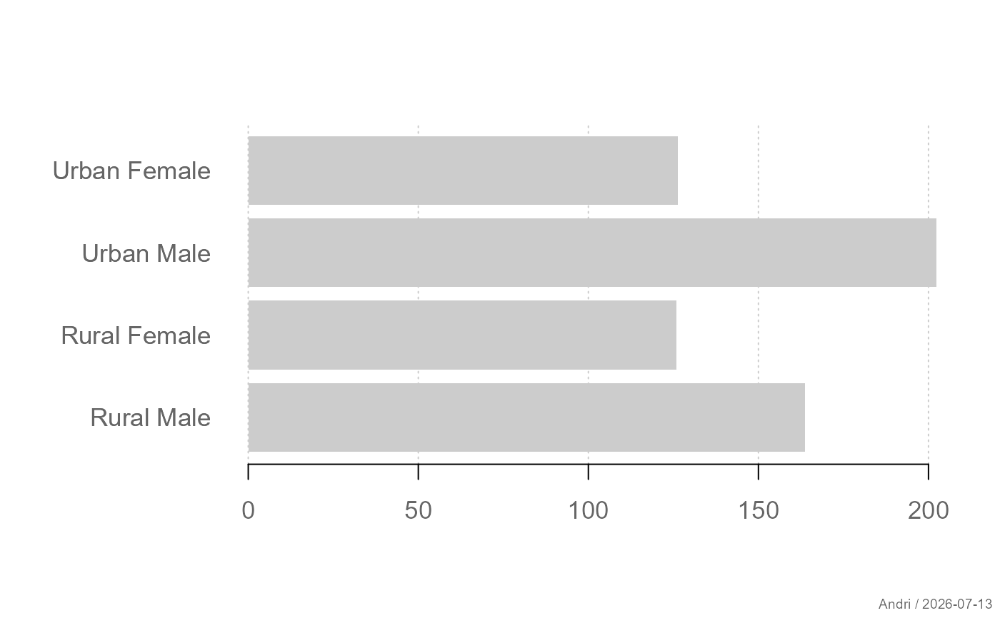
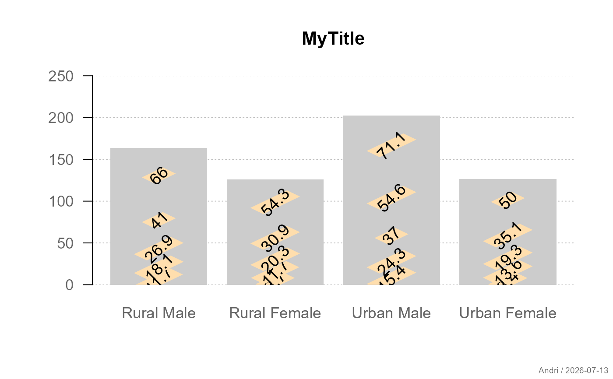
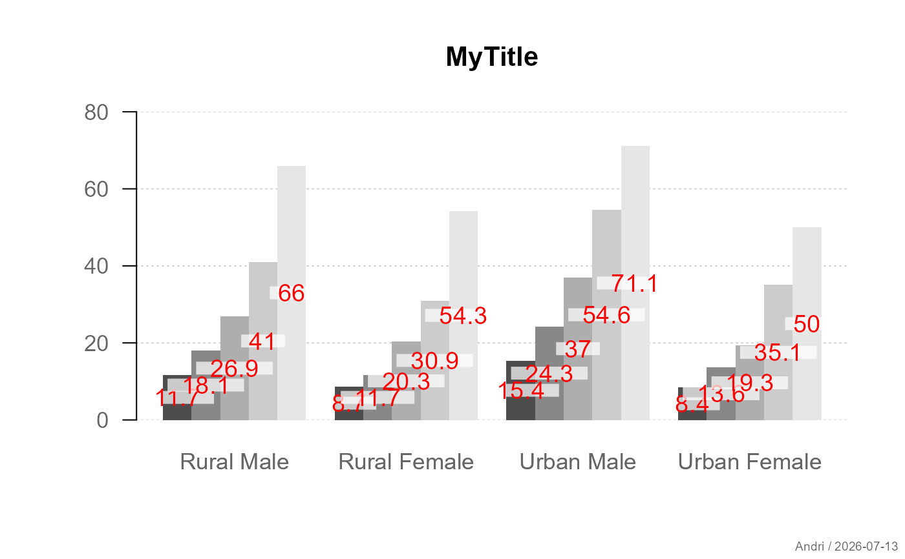
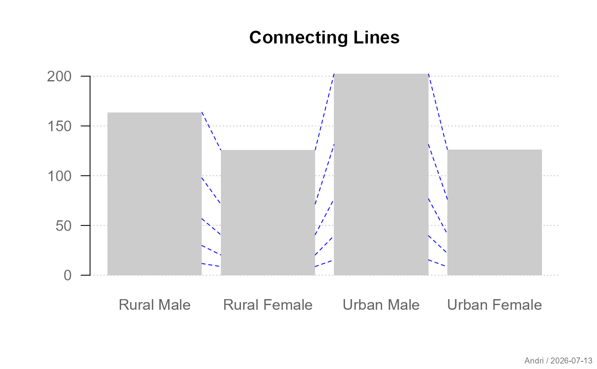
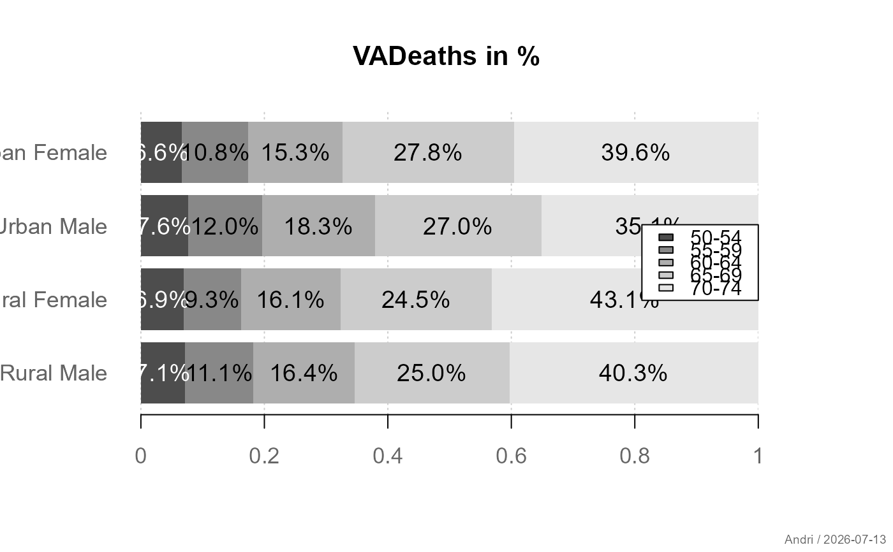
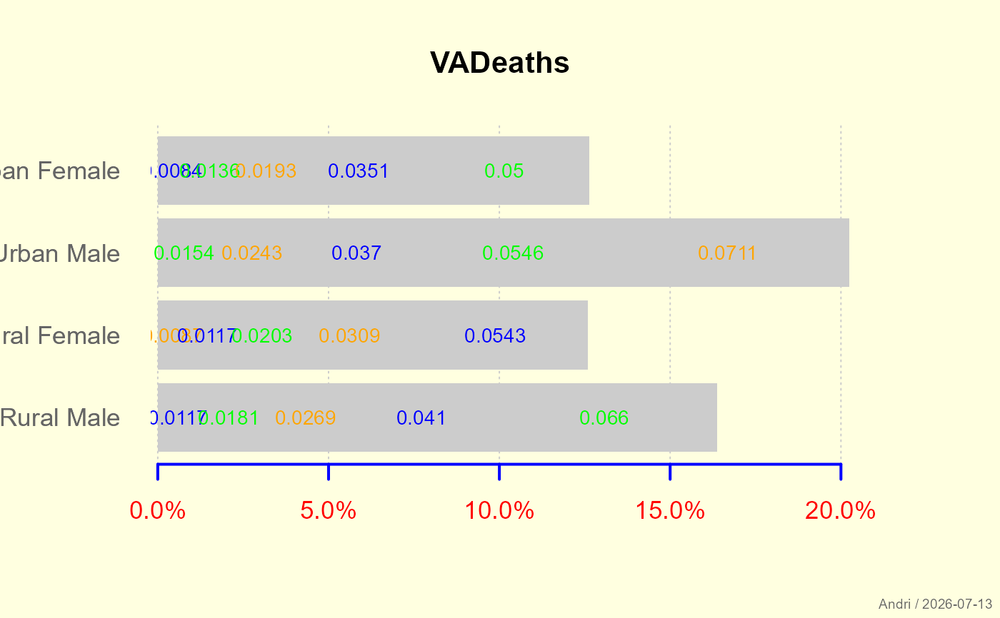

Creates a themed wrapper around barplot with
support for consistent styling, optional grid lines, value labels,
and connecting lines for stacked barplots.
Usage
plotBar(
height,
main = NULL,
xlab = NULL,
ylab = NULL,
yax = NULL,
beside = FALSE,
horiz = FALSE,
col = .useTheme,
border = .useTheme,
grid = .useTheme,
box = FALSE,
text = NULL,
connlines = NULL,
stamp = .useTheme,
...
)Arguments
- height
A vector or matrix of bar heights passed directly to
barplot.- main, xlab, ylab
optional plot labels. Defaults follow base graphics behaviour.
- yax
controls drawing of the numeric axis.
Supported values are
TRUEdraw axis using package defaults
FALSEsuppress axis
NULLdo not draw a numeric axis at all
list(...)custom axis parameters passed to the axis drawing routine
- beside
logical. If
TRUE, bars are drawn side-by-side. IfFALSE(default), bars are stacked.- horiz
logical. If
TRUE, bars are drawn horizontally. Defaults toFALSE.- col
bar fill colours.
.useTheme(default) resolves togetTheme()$bar$col.- border
bar border colour.
.useTheme(default) resolves togetTheme()$bar$border.- grid
controls drawing of grid lines. Can be:
.useTheme(default): follow the active theme (getTheme()$grid), restricted to the axis perpendicular to the value axis (e.g. horizontal lines only for vertical bars)TRUE: draw grid with theme settingsFALSE,NULL, orNA: suppress grida named list: arguments passed to
grid, overriding the theme/function defaults for this call only
- box
controls drawing of the plot box.
.useTheme(default) resolves togetTheme()$box.TRUE/FALSE/NA, or a named list, as forgrid.- text
optional list of arguments passed to
barTextto draw value labels on bars.- connlines
optional list of arguments controlling connecting lines between stacked bars. Only supported when
beside = FALSE.- stamp
controls the corner stamp.
.useTheme(default) resolves togetTheme()$stamp.TRUE/FALSE/NULL, or an explicit string, as for.withGraphicsState()(internal).- ...
additional arguments passed to
barplotand graphical parameters (viapar).
Value
Invisibly returns the midpoints of the bars as returned by
barplot.
Details
The function first initializes the plotting region invisibly using
barplot, optionally adds grid lines, and then
draws the actual bars and additional layers (axis, connecting lines,
text labels).
The function internally performs the following steps:
Draws an invisible
barplotto establish the coordinate system.Optionally adds grid lines.
Draws the bars.
Draws the numeric axis if enabled.
Optionally adds connecting lines for stacked bars.
Optionally adds value labels via
barText.Optionally draws a box around the plot region.
Graphical parameters such as bg, cex, las,
mar, etc. can be supplied via ....
The precedence of theme-aware settings (col, border,
grid, box, stamp) is
explicit argument > function-specific default > active theme (getTheme())
See also
graphics::barplot, barText, theme
Other plot.univariate:
plotArea(),
plotBox(),
plotCatDist(),
plotDens(),
plotDensBox(),
plotDot(),
plotECDF(),
plotFdist(),
plotLines(),
plotQQ(),
plotViolin()
Examples
# Simple barplot
plotBar(1:5)

# With grid lines
plotBar(1:5, grid = TRUE)
 # Stacked bars with labels and connecting lines
m <- matrix(c(3,2,4,1,5,2), nrow = 2)
plotBar(m,
text = list(pos = "mid"),
connlines = list(col = "black"))
# Stacked bars with labels and connecting lines
m <- matrix(c(3,2,4,1,5,2), nrow = 2)
plotBar(m,
text = list(pos = "mid"),
connlines = list(col = "black"))

# Grouped bars
plotBar(VADeaths,
beside = TRUE,
col = gray.colors(nrow(VADeaths)))

# Horizontal bars
plotBar(VADeaths,
horiz = TRUE,
las = 1)

plotBar(VADeaths, ylim=c(0,250),
grid=list(col = "grey", lty="dotted"),
las=1, main="MyTitle",
text = list(labels=VADeaths,
border = NA, srt=45, bg="navajowhite"))

plotBar(VADeaths, ylim=c(0,80),
las=1, main="MyTitle",
box=FALSE,
col=gray.colors(nrow(VADeaths)),
beside=TRUE,
text = list(col="red", bg=addOpacity("white", 0.7), border=NA))

plotBar(VADeaths, connlines = list(lwd=1, col="blue"),
box=FALSE, las=1, main="Connecting Lines")

ptab <- proportions(VADeaths, margin=2)
plotBar(ptab,
las=1, main="VADeaths in %",
box=FALSE, horiz=TRUE,
col=(cols <- gray.colors(nrow(VADeaths))),
beside=FALSE, mar=c(right=5),
text = list(labels=fm(ptab, fmt="%"), border=NA,
col=contrastColor(cols)))
legend(x="right", fill=cols, legend=rownames(VADeaths))

plotBar(VADeaths/1e3, box=FALSE, bg="lightyellow", main="VADeaths",
horiz=TRUE,
text=list(border=FALSE, cex=0.8, col=c("blue", "green","orange")),
mar=c(right=5),
yax = list(fmt="%", d=0, big=",",
col="red", col.axis="blue", lwd=2))
